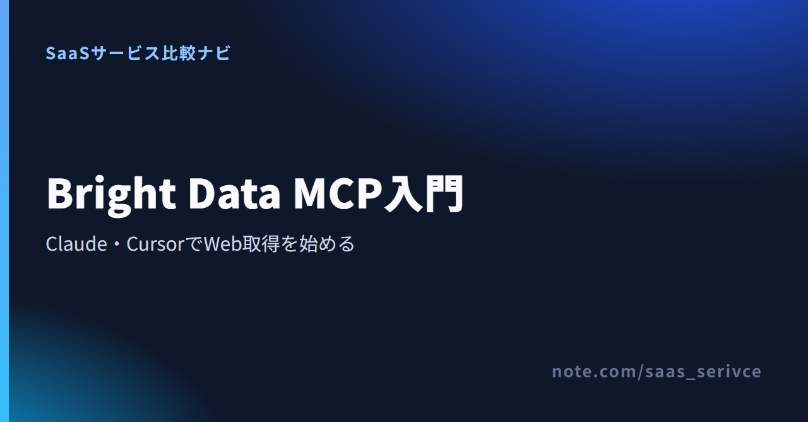

Bright Data MCPとは？Claude・Cursorへの設定と使い方
Bright Data MCPは、ClaudeやCursorから公開Webページを検索・取得するための接続口です。Web MCPとも呼ばれます。
通常APIとの違いから、事前準備、設定、無料範囲、エラー時の確認順まで紹介します。
Bright Data MCPでできること
AIとの会話からWeb検索やページ取得を呼び出せる仕組みです。取得した情報をClaudeやCursorで読み、そのまま要約や比較へ進めます。
- 呼び方：Bright Data MCP／Web MCP
- 接続先：Claude・Cursorなど
- 基本：Web検索とページ取得
- 拡張：構造化抽出とブラウザ操作
- 注意：Rapidが既定、Proは全ツール
アカウントを作成すると、MCP接続に使う認証情報を準備できます。

Bright Data MCPとWeb MCPは同じ製品を指す
公式ページでは「Bright Data MCP」と「Web MCP」の両方が使われています。検索結果や設定資料で名前が違っていても、ここでは同じMCPサーバーを指す呼び方として扱います。
MCPは、Model Context Protocolの略です。AIクライアントと外部ツールの間で、利用できる機能や受け渡す情報の形をそろえます。
Web検索・取得・抽出・ブラウザ操作をAIから呼び出せる
基本は、検索語を渡して候補ページを探す操作と、指定URLの本文を取得する操作です。対応ツールを有効にすると、ページから項目を抜き出したり、ブラウザを遠隔操作したりする処理も使えます。
すべての機能を最初から読み込むとは限りません。必要な機能はgroupsで群単位、toolsで個別に選べます。ClaudeやCursorに表示される操作は、この設定によって変わります。
対話しながら情報を集めたい場面に向く
たとえば「候補を検索し、公式ページだけを読み、違いをまとめる」といった調査です。途中で条件や対象ページを変えながら進めるなら、会話の流れから次のツールを選べるMCPが向いています。毎日同じURLを同じ形式で取得する処理には、通常APIで手順を固定する方法が向いています。
Web MCPと通常APIは処理の進め方が違う
AIと対話しながら検索や取得を任せるなら、MCPが選択肢になります。呼び出し順を固定して定期実行するなら、APIやSDKのほうが細かく制御できます。
- MCP：AIが目的に応じてツールを選ぶ
- API：開発者が入力値と処理順を決める
- MCP向き：調査・比較・試行錯誤
- API向き：定期・大量・再現性重視
MCPはAIが使うツールを選んで処理する
MCPでは、利用者が自然文で依頼し、AIクライアントが登録済みのBright Dataツールから処理を選びます。「まず検索し、よい候補だけ本文を取得する」といった分岐を、会話の続きとして頼めるのが特徴です。
ただし、同じ依頼でも毎回まったく同じ順序になるとは限りません。処理の再現性が重要なら、使うツール名や対象URLを依頼文で絞ります。
APIは呼び出し順と出力を細かく固定できる
通常APIでは、開発者がエンドポイント、入力値、エラー処理、保存先をコードに定めます。取得処理をバッチや社内システムへ組み込み、件数や実行時刻を固定したい場合に向いています。
対話型の調査か定期・大量処理かで選ぶ
Web調査の試作はMCPで始め、使うツールと出力形式が固まった処理だけAPIへ移す流れが考えられます。大量取得を予定しているなら、頻度と再実行の条件までコードで管理できるAPIも比べてください。
Claude・Cursorで使う前に準備するもの
利用前にBright Dataのアカウントと認証情報を用意します。ClaudeまたはCursorがMCP接続に対応しているかも確かめてください。
- Bright Dataアカウント
- 公式手順で発行した認証情報
- MCPに対応するClaudeまたはCursor
- ローカル版で使うNode.js環境
- 認証情報を公開しない保存場所
Bright Dataのアカウントと認証情報
接続にはBright DataのAPIトークンを使います。トークンはパスワードと同じ扱いにし、記事、チャット、画面共有へ実値を載せないでください。
設定例にあるYOUR_API_TOKENはダミーです。実際の値へ置き換えるときは、共有ファイルや公開リポジトリへ入らない保存方法を選びます。
月5,000クレジットの無料利用は、クレジットカードを登録せずに始められます。有料分はUSD建てです。支払いはクレジットカード、PayPal、Alipayに対応します。Payoneer、Google Pay、Apple Payも選べます。
日本語の公式サイトはありますが、管理画面全体の日本語化と有人サポートの応対言語は、公表情報だけでは範囲を確認できません。日本語サイトの有無と、管理画面や問い合わせ対応の言語は分けて判断してください。
Claude・Cursor側のMCP対応状況
Claudeは利用するアプリによって登録場所が異なります。Claude Desktopではカスタムコネクタ、Claude Codeではコマンドから追加する方法が公式リポジトリに掲載されています。
CursorはMCP設定からサーバーを追加します。メニュー名や保存場所が変わった場合は、各クライアントの現行ヘルプを優先してください。
ローカル接続に必要な実行環境
インストール不要のホスト版なら、接続先URLをクライアントへ登録します。ローカル版はnpx @brightdata/mcpを起動するため、Node.jsとnpxを実行できる環境が必要です。
社内端末でコマンド実行が制限されているなら、導入前に管理者へ相談するか、ホスト版を選びます。
登録後はAPIトークンを発行し、ホスト版かローカル版を選ぶ手順へ進めます。
Bright Data MCPを安全に設定する
公式GitHubで現行の接続方法を読み、ホスト版かローカル版を選びます。設定例ではトークンをダミー値のまま示します。
- ホスト版：接続先URLを登録
- ローカル版：npxでMCPを起動
- 認証：APIトークンを渡す
- 機能範囲：Rapid／Proとツールを選ぶ
- 反映：保存後にクライアントを再読込
ホスト版とローカル版から接続方法を選ぶ
ホスト版の接続先は次の形です。YOUR_API_TOKENには、自分のトークンを設定します。
https://mcp.brightdata.com/mcp?token=YOUR_API_TOKEN
手元で動かす場合は、クライアントのMCP設定に実行コマンドを登録します。
{"mcpServers":{"Bright Data":{"command":"npx","args":["@brightdata/mcp"],"env":{"API_TOKEN":"YOUR_API_TOKEN"}}}}
インストールの手間を減らしたいならホスト版、実行環境や設定を手元で管理したいならローカル版が向いています。
認証情報とモードを設定する
Rapidが既定で、Proは全ツールを有効にする設定です。手元で動かす場合は環境変数PRO_MODE=true、ホスト版は接続URLの末尾に&pro=1を加えます。
全ツールが不要なら、機能を絞る方法もあります。ローカル接続ではGROUPSまたはTOOLS、ホスト版ではgroupsまたはtoolsを指定します。最初は検索とページ取得に必要な範囲だけを選びましょう。
トークンを設定ファイルへ直書きしない
トークンは環境変数やクライアントの保管機能から渡します。ファイルへ保存する場合は公開リポジトリへ追加せず、画面共有や問い合わせ前に実値を伏せてください。
Claude・Cursorから最初のWebデータを取得する
接続後は簡単な検索かページ取得を実行します。ツール名と結果の両方を見て成功を判断します。
- Claude：利用アプリに合う方法で登録
- Cursor：MCP設定を追加して再読込
- 初回：公開ページを検索または取得
- 成功：ツール名と結果の両方を見る
- 注意：規約・個人情報・著作権を尊重
ClaudeへMCP接続を追加する
Claude Desktopでは、設定のコネクタ画面からカスタム接続を追加します。名前をBright Dataとし、ホスト版のURLを登録します。
Claude Codeでは、公式GitHubに掲載された次の形で追加できます。
claude mcp add --transport http brightdata "https://mcp.brightdata.com/mcp?token=YOUR_API_TOKEN"
保存後にBright Dataのツールが見えない場合は、Claudeを再読込してから接続状態を見直します。
CursorへMCP接続を追加する
Cursorでは~/.cursor/mcp.jsonへMCPサーバーを追加します。ホスト版を使う最小構成は次の形です。
{"mcpServers":{"brightdata":{"url":"https://mcp.brightdata.com/mcp?token=YOUR_API_TOKEN"}}}
設定を保存したらCursorを再読込します。JSONのかっこや引用符が欠けていると、サーバー自体が一覧に表示されません。
最小プロンプトで接続成功を確かめる
初回は、対象を公開ページに限定します。たとえば「Bright Dataの日本語トップページを取得し、主な製品名だけ箇条書きにしてください」のような依頼です。
返答だけでなく、Bright Dataの検索・取得ツールが実行されたかも見ます。別の内蔵検索が使われた場合は、「Bright Data MCPを使う」とツール名を明示してください。
取得先のrobots.txtと利用規約に従ってください。個人情報や著作物の無断収集は避けます。
料金と無料クレジットは対象範囲を分けて読む
MCPはWeb Unlocker API上で動き、対象製品で共通する月5,000クレジットを消費します。Datacenter、ISP、Residential Proxies向けのトライアルだけは別枠です。
料金はUSDで表示されます。1ドル=158円換算（執筆時点の目安。為替で変動）として、必要額を見積もってください。
MCPの無料枠は抽出・ブラウザ操作も対象
Rapidは既定モードで、検索とページ取得が基本機能です。ただし、月5,000回の無料対象はRapidだけではありません。構造化スクレイパーとブラウザ自動化も含まれます。
MCPの利用分は、Web Unlocker APIやSERP APIなどと同じ月5,000クレジットから消費されます。毎月1日に5,000へ戻り、未使用分は翌月へ繰り越されません。チームアカウントでは全ユーザーで共有します。
Pro機能は無料対象と課金条件を確認する
Proは全ツールを有効にする設定です。構造化抽出やブラウザ操作も無料5,000回に含まれます。上限を超えると、検索・取得・抽出は1,000結果あたり1.50ドル（約240円）、ブラウザ操作は1GBあたり8ドル（約1,260円）です。
入金済み残高がなければ、無料枠を使い切った時点で処理は止まります。残高があるアカウントは従量課金へ移ります。予算を抑えるなら、groupsやtoolsで必要な機能だけを有効にしてください。
プロキシ製品の無料条件とは分けて考える
Datacenter、ISP、Residential Proxiesは、月額無料クレジットの対象外です。別枠で新規登録時に2ドルのトライアルクレジットが付き、7日間使えます。支払方法を追加すると5ドルが加わり、有効期間は30日です。
無料枠があっても、すべての製品を無料で使えるわけではありません。MCPと対象APIの共通プール、プロキシ向けの一回限りの試用を分けてください。
登録画面では、利用予定のツールが現在の無料対象に含まれるか確認できます。
うまく動かないときは6項目を順番に確認する
設定を最初から作り直す前に、認証情報、接続先、JSON、再読込の順で見直します。最後にツールの有効化と利用上限を切り分けます。
- 認証情報が正しいか
- 接続先URLまたはコマンドが現行か
- JSONなどの設定形式が正しいか
- クライアントを再読込したか
- 対象ツールとモードが有効か
- 無料枠・利用上限へ達していないか
認証情報・接続先・設定形式を見直す
認証エラーが出たら、APIトークンの空白や不要な引用符を見直します。起動しない場合はNode.jsとnpxを確認し、Cursorに表示されない場合はJSONの階層とかっこを調べてください。
再読込とツールの有効化を確かめる
設定を保存しただけでは、新しいMCPサーバーが反映されないクライアントがあります。ClaudeまたはCursorを再読込し、Bright Dataの接続状態とツール一覧を開きます。
サーバーが接続済みでも、groupsやtoolsで対象外にした機能は候補に出ません。検索、取得、抽出など、使いたい処理が設定に含まれるかを見直します。
Proモードと利用上限を切り分ける
基本ツールは動くのに特定機能だけ失敗するなら、Rapid／Proとgroups／toolsの指定を見直します。設定に問題がなければ、共通クレジットの残量を調べてください。
解決しないときは、トークンを伏せたうえで、エラーを識別できる部分と設定方式を添えます。その情報をもとに、Bright Dataのサポートか公式GitHubのIssuesを調べてください。
まとめ：MCPは対話型のWeb取得から始めやすい
ClaudeやCursorと会話しながらWebデータを集めるなら、Bright Data MCPが選択肢になります。MCPと対象APIは月5,000クレジットを共有し、プロキシ向けの試用だけが別枠です。
- MCP向き：対話しながら検索・取得する
- API向き：定期・大量処理を固定する
- 初回：最小プロンプトで接続を試す
- 無料枠：対象製品で月5,000を共有
Claude・Cursorで調査するならMCPを候補にする
最初はホスト版を登録し、公開ページの検索または取得から始めます。成功したら、groupsやtoolsで必要な機能だけを追加してください。取得した内容は、同じ会話で要約や比較へ進められます。
定期・大量処理なら通常APIも比較する
処理対象と出力形式が固まったら、通常APIやSDKも選択肢に入ります。MCPで調査手順を固め、繰り返す部分だけコードへ移せば、定期実行や再処理の条件をそろえられます。
アカウント作成後は、無料クレジットの残量を見ながらMCPの接続設定へ進めます。
関連するnote
- Bright Dataの全体像を調べるときの候補：Bright Dataとは？機能・料金・使い方と日本から契約するときの注意点
- Bright Dataの登録と基本操作を確認するときの候補：Bright Dataの使い方【初心者向け】登録・製品選びから初回のデータ取得まで
- Bright Dataの料金と無料範囲を調べるときの候補：Bright Dataの料金プラン｜無料枠・課金単位・日本からの支払いを解説
もっと詳しく比較したい方へ
- スクレイピングツールを比べるときの候補：スクレイピングツールおすすめ5選｜料金・無料枠・日本語対応で比較
- プロキシサービスを比べるときの候補：有料プロキシサーバーのおすすめ5選｜スクレイピング・広告検証など用途別の選び方